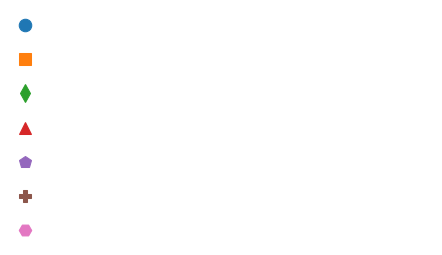
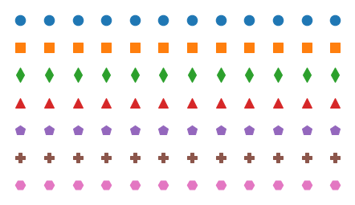
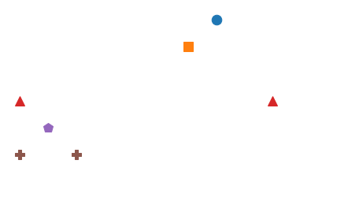
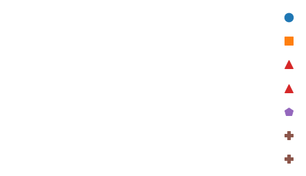
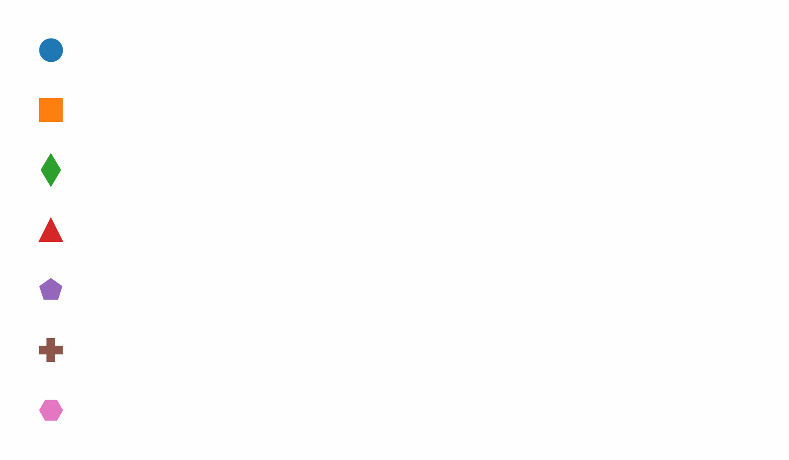
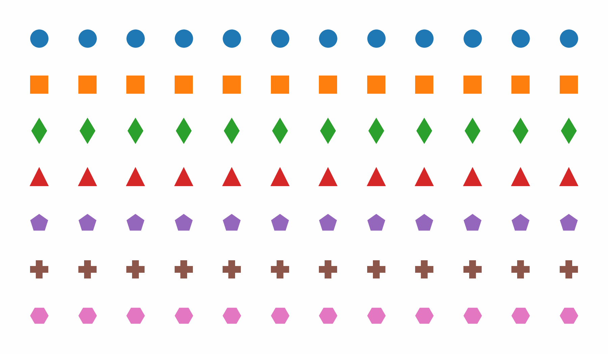
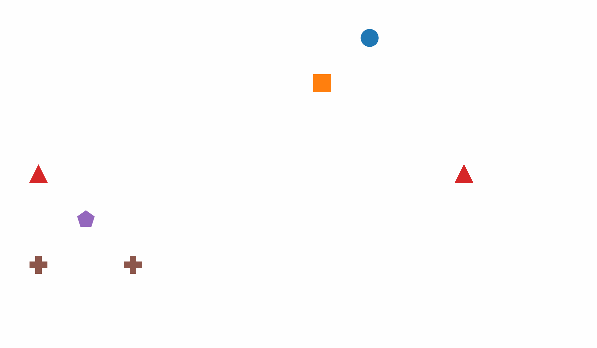

Resampling animation#
%load_ext nb_black
%load_ext autoreload
%autoreload 2
The nb_black extension is already loaded. To reload it, use:
%reload_ext nb_black
The autoreload extension is already loaded. To reload it, use:
%reload_ext autoreload
import numpy as np
import pandas as pd
import matplotlib.pyplot as plt
import seaborn as sns
np.random.seed(17)
plt.rcParams["figure.dpi"] = 75
plt.rcParams["figure.figsize"] = [6, 3.5]
nrows, ncols = 7, 12
# nrows, ncols = 6, 11
xs = np.arange(ncols)
ys = nrows - np.arange(nrows) - 1
X1, Y1 = np.meshgrid(xs, ys, indexing="xy")
X0 = np.full_like(X1, 0)
Y0 = Y1
def make_selection(nrows, ncols, nselect):
array = np.zeros((nrows, ncols))
row_indices = np.random.randint(nrows, size=nselect)
col_indices = np.random.randint(ncols, size=nselect)
array[row_indices, col_indices] = 1
return array
np.random.seed(1)
alpha0 = np.full((nrows, ncols), 0)
alpha0[:, 0] = 1
alpha1 = np.full((nrows, ncols), 1)
alpha2 = make_selection(nrows, ncols, nrows)
indices = np.transpose(np.nonzero(alpha2))
X2 = np.zeros_like(X0)
Y2 = np.zeros_like(Y0)
for k, (i, j) in enumerate(indices):
X2[i, j] = xs.max()
Y2[i, j] = ys.max() - k
from scipy.special import expit
def interpolate(A0, A1, t):
if t > 0 and t < 1:
t = expit((t - 0.5) * 10)
return A0 * (1 - t) + A1 * t
markers = ["o", "s", "d", "^", "p", "P", "H", "v", "<", ">"]
colors = plt.cm.tab10.colors
def draw_array(X, Y, alphas):
"""Draw an array of shapes.
X: array of x coordinates
Y: array of y coordinates
alphas: array of transparency parameters
"""
plt.clf()
nrows, ncols = X.shape
for i in range(nrows):
marker, color = markers[i], colors[i]
[
plt.plot(X[i, j], Y[i, j], marker, color=color, ms=12, alpha=alphas[i, j])
for j in range(ncols)
]
plt.xlim(-0.5, ncols - 0.5)
plt.ylim(-0.5, nrows - 0.5)
# remove spines
ax = plt.gca()
for spine in ax.spines.values():
spine.set_visible(False)
for axis in [ax.xaxis, ax.yaxis]:
axis.set_ticks([])
plt.tight_layout()
def draw_phase1(t):
X = interpolate(X0, X1, t)
Y = interpolate(Y0, Y1, t)
alpha = interpolate(alpha0, alpha1, t)
draw_array(X, Y, alpha)
draw_phase1(0)
plt.savefig("resampling_phase0.png", dpi=300)

draw_phase1(1)

def draw_phase2(t):
alpha = interpolate(alpha1, alpha2, t)
draw_array(X1, Y1, alpha)
draw_phase2(1)

def draw_phase3(t):
X = interpolate(X1, X2, t)
Y = interpolate(Y1, Y2, t)
alpha = alpha2
draw_array(X, Y, alpha)
draw_phase3(1)

import imageio
from io import BytesIO
def savegif(filename, draw_frame_func):
num_frames = 24
frames = []
for i in range(num_frames):
t = i / (num_frames - 1)
draw_frame_func(t)
# Save the frame to a BytesIO object
buf = BytesIO()
plt.savefig(buf, format="png", dpi=300)
buf.seek(0)
frames.append(imageio.v2.imread(buf))
# Save frames as GIF
plt.close()
imageio.mimsave(filename, frames, duration=1 / 24)
filename1 = "resampling_phase1.gif"
savegif(filename1, draw_phase1)
from IPython.display import display, Image
display(Image(filename=filename1))

filename2 = "resampling_phase2.gif"
savegif(filename2, draw_phase2)
display(Image(filename=filename2))

filename3 = "resampling_phase3.gif"
savegif(filename3, draw_phase3)
display(Image(filename=filename3))

!convert resampling_phase*.gif -delay 500 resampling.gif